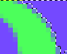
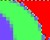
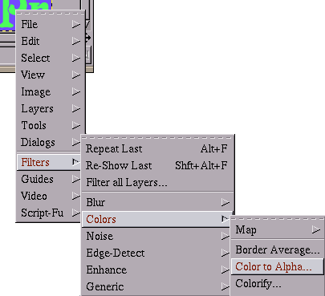
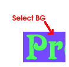
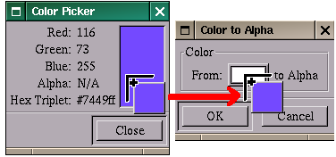
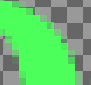
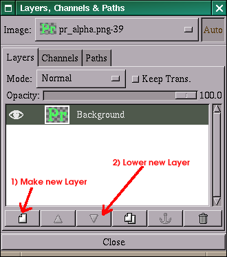

to
This tutorial shows you how you can effeciently replace the background of an image with another in GIMP, through the use of the color to alpha plug-in. The aim is to show the advantages of using the color to alpha plug-in over selection-based techniques. To illustrate this, this tutorial will use the above images as source and destination. This tutorial doesn't address the complexities of handling real-world photos in this manner, but does briefly discuss it at the end.


The common approach to doing many things in GIMP is to first get a good selection. However, when removing an anti-aliased object from its background is not a good idea, as shown above. You'll note that each of the three zoomed in selections above have varying amounts of the green-blue mix selected. When these are filled, we are left with flat black and slightly blueish-green pixels between them, or no transition to black at all. Compare each with the target image below. The left one has a blue border around it. This looks somewhat neat, but not what we're going for. The middle one is close, but there are some ugly visble pixels still. You can try getting rid of all the ugly pixels, but then you'll end up with something jagged like on the right. You can spend hours trying to find something that will work perfectly, but you won't. Anything short of the rightmost image has some blue in the pixel, which will stick out. You can go too far, and blend it back to something close, but this is time consuming. Instead, may I suggest the rest of the tutorial?

The first step is to activate the color to alpha plug-in. Its menu location is <image>/Filters/Colors/Color To Alpha, where <image> means to right click on the image. If its grayed-out, it means that you have an indexed image. If its not there, upgrade your gimp to 1.2.x.

Next use the Color Picker Tool to select the background color.

When you used the color picker to select the background, a window with the color popped up. Click, hold, and drag from the color portion of this window to the color portion of the Color To Alpha plug-in. If using Gimp for Windows, you'll have to right-click on the destination button and select the Foreground - drag n' drop doesn't work. Click OK after the color indicator on the Color To Alpha plug-in is changed to blue.

There should now be a nice green and alpha image with no trace of the blue left. Next add the new background.

Now create a New Layer (have Forground set to Red when you do this). Lower the newly created layer.
The image should now be green on red, with no trace of blue!
- Photo's don't tend to have one color you can choose like that
- The foreground may contain portions of that color that are removed by the plug-in
The work arounds, respectively, are:
- Apply multiple times, or just once and touch-up by hand
- Paint underneath the new image with the original color to bring it back to those portions that need it